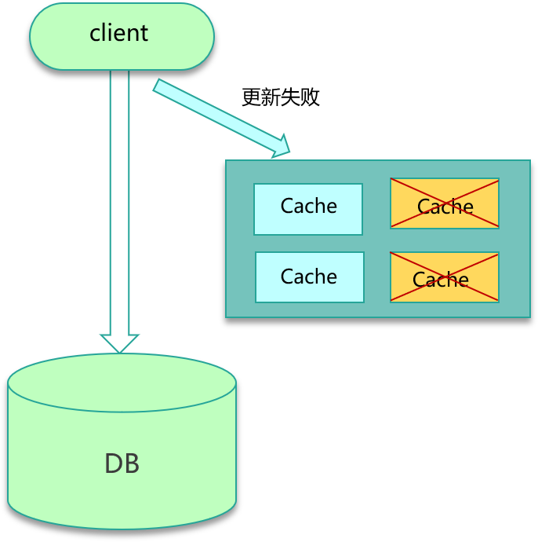
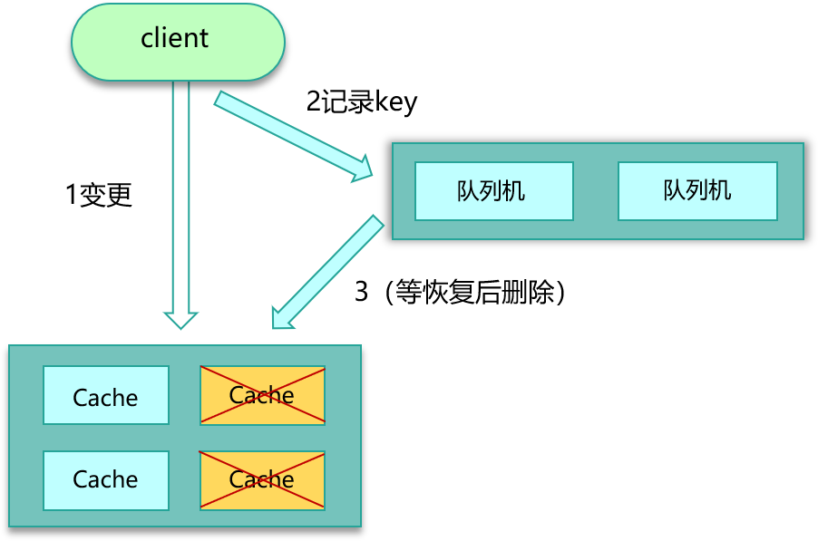
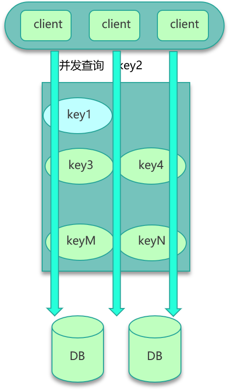
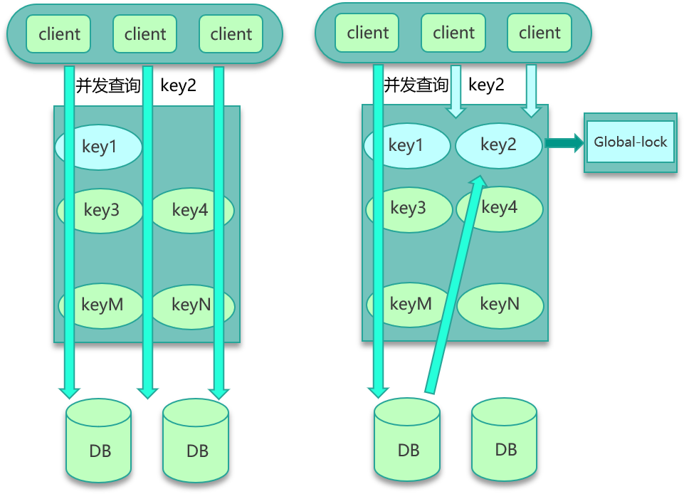
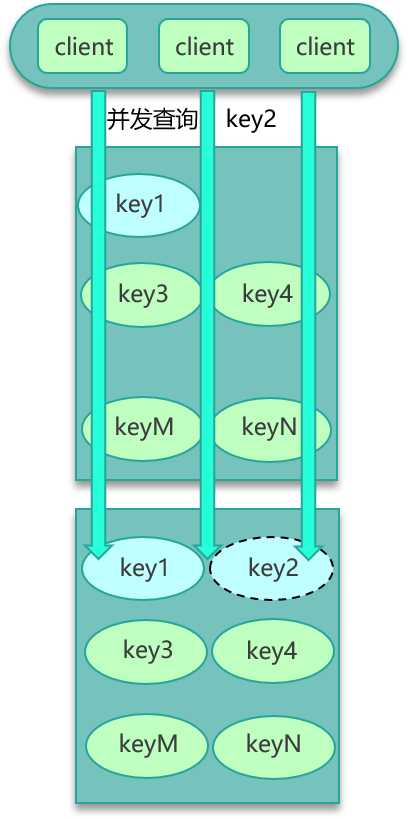

- 00 开篇寄语：缓存，你真的用对了吗？.md
- 01 业务数据访问性能太低怎么办？.md
- 02 如何根据业务来选择缓存模式和组件？.md
- 03 设计缓存架构时需要考量哪些因素？.md
- 04 缓存失效、穿透和雪崩问题怎么处理？.md
- 05 缓存数据不一致和并发竞争怎么处理？.md
- 06 Hot Key和Big Key引发的问题怎么应对？.md
- 07 MC为何是应用最广泛的缓存组件？.md
- 08 MC系统架构是如何布局的？.md
- 09 MC是如何使用多线程和状态机来处理请求命令的？.md
- 10 MC是怎么定位key的.md
- 11 MC如何淘汰冷key和失效key.md
- 12 为何MC能长期维持高性能读写？.md
- 13 如何完整学习MC协议及优化client访问？.md
- 14 大数据时代，MC如何应对新的常见问题？.md
- 15 如何深入理解、应用及扩展 Twemproxy？.md
- 16 常用的缓存组件Redis是如何运行的？.md
- 17 如何理解、选择并使用Redis的核心数据类型？.md
- 18 Redis协议的请求和响应有哪些“套路”可循？.md
- 19 Redis系统架构中各个处理模块是干什么的？.md
- 20 Redis如何处理文件事件和时间事件？.md
- 21 Redis读取请求数据后，如何进行协议解析和处理.md
- 22 怎么认识和应用Redis内部数据结构？.md
- 23 Redis是如何淘汰key的？.md
- 24 Redis崩溃后，如何进行数据恢复的？.md
- 25 Redis是如何处理容易超时的系统调用的？.md
- 26 如何大幅成倍提升Redis处理性能？.md
- 27 Redis是如何进行主从复制的？.md
- 28 如何构建一个高性能、易扩展的Redis集群？.md
- 29 从容应对亿级QPS访问，Redis还缺少什么？.md
- 30 面对海量数据，为什么无法设计出完美的分布式缓存体系？.md
- 31 如何设计足够可靠的分布式缓存体系，以满足大中型移动互联网系统的需要？.md
- 32 一个典型的分布式缓存系统是什么样的？.md
- 33 如何为秒杀系统设计缓存体系？.md
- 34 如何为海量计数场景设计缓存体系？.md
- 35 如何为社交feed场景设计缓存体系？.md
05 缓存数据不一致和并发竞争怎么处理？
你好，我是你的缓存老师陈波，欢迎进入第5课时“缓存数据相关的经典问题”。
数据不一致
问题描述
七大缓存经典问题的第四个问题是数据不一致。同一份数据，可能会同时存在 DB 和缓存之中。那就有可能发生，DB 和缓存的数据不一致。如果缓存有多个副本，多个缓存副本里的数据也可能会发生不一致现象。
原因分析
不一致的问题大多跟缓存更新异常有关。比如更新 DB 后，写缓存失败，从而导致缓存中存的是老数据。另外，如果系统采用一致性 Hash 分布，同时采用 rehash 自动漂移策略，在节点多次上下线之后，也会产生脏数据。缓存有多个副本时，更新某个副本失败，也会导致这个副本的数据是老数据。
业务场景
导致数据不一致的场景也不少。如下图所示，在缓存机器的带宽被打满，或者机房网络出现波动时，缓存更新失败，新数据没有写入缓存，就会导致缓存和 DB 的数据不一致。缓存 rehash 时，某个缓存机器反复异常，多次上下线，更新请求多次 rehash。这样，一份数据存在多个节点，且每次 rehash 只更新某个节点，导致一些缓存节点产生脏数据。

解决方案
要尽量保证数据的一致性。这里也给出了 3 个方案，可以根据实际情况进行选择。
- 第一个方案，cache 更新失败后，可以进行重试，如果重试失败，则将失败的 key 写入队列机服务，待缓存访问恢复后，将这些 key 从缓存删除。这些 key 在再次被查询时，重新从 DB 加载，从而保证数据的一致性。
- 第二个方案，缓存时间适当调短，让缓存数据及早过期后，然后从 DB 重新加载，确保数据的最终一致性。
- 第三个方案，不采用 rehash 漂移策略，而采用缓存分层策略，尽量避免脏数据产生。

数据并发竞争
问题描述
第五个经典问题是数据并发竞争。互联网系统，线上流量较大，缓存访问中很容易出现数据并发竞争的现象。数据并发竞争，是指在高并发访问场景，一旦缓存访问没有找到数据，大量请求就会并发查询 DB，导致 DB 压力大增的现象。
数据并发竞争，主要是由于多个进程/线程中，有大量并发请求获取相同的数据，而这个数据 key 因为正好过期、被剔除等各种原因在缓存中不存在，这些进程/线程之间没有任何协调，然后一起并发查询 DB，请求那个相同的 key，最终导致 DB 压力大增，如下图。

业务场景
数据并发竞争在大流量系统也比较常见，比如车票系统，如果某个火车车次缓存信息过期，但仍然有大量用户在查询该车次信息。又比如微博系统中，如果某条微博正好被缓存淘汰，但这条微博仍然有大量的转发、评论、赞。上述情况都会造成该车次信息、该条微博存在并发竞争读取的问题。
解决方案
要解决并发竞争，有 2 种方案。
- 方案一是使用全局锁。如下图所示，即当缓存请求 miss 后，先尝试加全局锁，只有加全局锁成功的线程，才可以到 DB 去加载数据。其他进程/线程在读取缓存数据 miss 时，如果发现这个 key 有全局锁，就进行等待，待之前的线程将数据从 DB 回种到缓存后，再从缓存获取。

- 方案二是，对缓存数据保持多个备份，即便其中一个备份中的数据过期或被剔除了，还可以访问其他备份，从而减少数据并发竞争的情况，如下图。

© 2019 - 2023 Liangliang Lee. Powered by gin and hexo-theme-book.